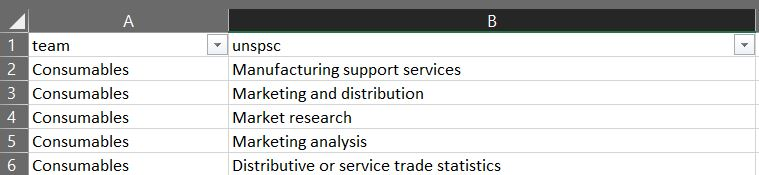

Machine Learning in Porcurement
Intro
Spend analysis is necessary for reviewing procurement spend to decrease costs, increase efficiency or improve supplier relationships. ML model allows to recognize a spend type based on its specification.
Features
App includes following features:
Demo
Script perfoms following steps:
- Loding features - lables data into memory.
- Splitting data into training and testing subsets:
- X_train - features for training model.
- y_train - labels for training model.
- X_test - features for testing model.
- y_test - labels for testing model.
- X_train featrues has their ow y_train labels respectively.
- X_test featrues has their ow y_test labels respectively. - Setting pipeline of voctorizing words and applying LinearSVC algorithm:
- Word Vectorization means replacing words with numbers so that machine can compute it
- the often specific occurs, the bigger value it gets
- outcome of vectorization is a list with the numbers where each item is a signle word - Training ML model using subsets X_train and y_train.
- Using trained model to predict labels for test features from X_test.
- We can assess model's accuracy by comparing received predictons with respective test labels from y_test.
- accuracy can be measured as divison: predictions / y_test.
- when it's highet than 80% then for my needs model is reliable. - Once I find model reliable, I can put new features that model has not seen through.
- Trained model gives labels for new features.
Conclusions:
- Spend specifications are taken as features in ML model training.
- Team's Clusters (f.e.: Information Technologies, Logistic) are taken as labels in ML model training.
- Accuracy for the model equals 80% which for our purpose is totally enough.
- 80% accuracy means that 80% of predicted labels for testing features are in line with testing lables.
- Application: we can use the ML model to recoginze Team's Cluster based on given spend specification assigned to spend.
- This recognition enables us to distribute workload among partucular teams.

- Here we can see the overall accuracy and accuracy for particular team.
Setup
Python libraries installation required.
- pip install sklearn
- pip install pandas